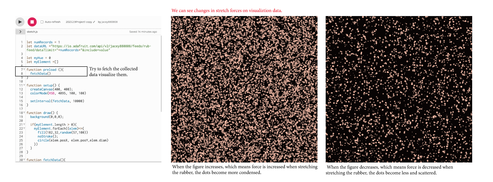

I want to measure my maximium stretch force and to see the changes of my stretch motions.
02 Data Collection
I tried to connect Rubber Cord Stretch Sensor and send the Flex value to the "Rub-Feed".
Data collected were stored and turned to the visualizrion in p5-js.

03 Visualization
